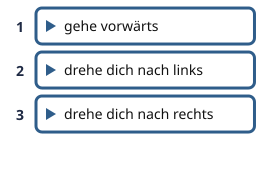

Sequenz
Mit einem KI-Tutor lernen
Ein KI-Tutor erklärt dir diese Seite und hilft dir bei den Aufgaben. Wähl deinen Assistenten:
Mit Claude öffnen Mit ChatGPT öffnen Mit Mistral Vibe öffnen
Du nutzt dein eigenes Konto beim Anbieter. Der Assistent ist kein Angebot von lernapps.net: lernapps liefert nur Inhalte und Aufgaben. Die Wahl gilt für alle Seiten, nur auf diesem Gerät.
Mia ist Kiko
Im Klassenchat der 7b, am Abend vor Informatik:
Frau Berg: Morgen spielen wir weiter, auf dem Spielfeld am Boden. Diesmal nur mit drei Karten: vorwärts, links drehen, rechts drehen. Wer ist Kiko?
Mia: Wieder ich!
Jona: Dann lege ich die Karten 😄
Hier lernst du, Kiko mit drei Befehlen ans Ziel zu bringen.
Aufgabe
Lösung
Feld A
Du hast „drehe dich nach links“ wie „drehe dich und geh ein Feld“ gezählt. Beim Drehen bleibt Kiko auf seinem Feld.
Feld B richtige Antwort
Richtig: vorwärts, links drehen, vorwärts.
Feld C
So wäre es, wenn Kiko sich zuerst dreht. Die erste Karte ist aber „gehe vorwärts“.
Feld D
Du hast links und rechts verwechselt. Kiko schaut im Bild nach rechts. Dreht er sich nach links, schaut er im Bild nach oben.
Vorwärts auf Spalte 3, Zeile 4. Links drehen: Kiko schaut im Bild nach oben. Vorwärts auf Spalte 3, Zeile 3.
Drei Befehle in fester Reihenfolge
Kiko kennt drei Befehle: gehe vorwärts (ein Feld weiter) sowie drehe dich nach links und drehe dich nach rechts (eine Vierteldrehung auf der Stelle).
- Befehl
Ein Befehl ist eine einfache Anweisung, die Kiko kennt und direkt ausführen kann.

© CC-BY-4.0Kikos drei Befehle als Karten
- Sequenz
Eine Sequenz ist eine Folge von Anweisungen, die nacheinander ausgeführt werden, jede genau einmal, in der Reihenfolge, in der sie aufgeschrieben sind.
Merke
Drehen ändert nur die Blickrichtung, Kiko bleibt auf dem Feld. Links und rechts gelten aus Kikos Sicht. Zweimal in dieselbe Richtung drehen ist eine halbe Drehung: Kiko schaut dann zurück. Und die Reihenfolge zählt.
Selbst ausprobieren
Ohne Computer, zu dritt oder zu viert (allein: Spielfeld auf Kästchenpapier, eine Spielfigur ist Kiko):
- Druckt das Spielfeld und die Befehlskarten aus oder klebt ein Spielfeld mit Klebeband auf den Boden.
- Schneidet Kiko, das Ziel und Wände vom Spielfeld-Blatt aus und legt sie hin.
- Ein Kind legt die Karten untereinander.
- Ein Kind ist Kiko und folgt den Karten genau, von oben nach unten.
- Kommt Kiko nicht ans Ziel, sucht gemeinsam die falsche Karte. Dann tauscht die Rollen.


Mit Computer: In der Programmierwerkstatt, einer Webseite, sind die Karten Blöcke mit denselben Wörtern. Das Feld in Spalte 4, Zeile 2 heißt dort kurz (4|2). Bring Kiko zur Fahne: Challenge „Kiko läuft zur Fahne“ öffnen
 © CC-BY-4.0
© CC-BY-4.0So sieht die Challenge in der Werkstatt aus.
Übung
Aufgabe
Lösung
Richtige Antwort: 9
7 Karten „gehe vorwärts“ und 2 Drehungen: links, dann rechts.
Aufgabe
Lösung
vorwärts, vorwärts, rechts, vorwärts, vorwärts, vorwärts richtige Antwort
Richtig: 2 Felder hoch, rechts drehen, 3 Felder bis zum Ziel.
vorwärts, vorwärts, links, vorwärts, vorwärts, vorwärts
Nach links schaut Kiko gegen die Wand. Aus seiner Sicht liegt das Ziel rechts.
vorwärts, vorwärts, vorwärts, rechts, vorwärts, vorwärts
Beim dritten „vorwärts“ läuft Kiko gegen die Wand. Die Kurve kommt schon nach 2 Feldern.
rechts, vorwärts, vorwärts, vorwärts, vorwärts, vorwärts
Die Karten stimmen, die Reihenfolge nicht: Kiko läuft gegen die Wand.
Erst geradeaus bis zur Kurve, dann drehen, dann weiter.
Aufgabe
Drei Beispielaufgaben, jede mit ihrer Lösung:
Aufgabe Nr. 1
Kiko steht in einem langen, geraden Gang. Er geht 3-mal vorwärts, dreht sich zweimal nach rechts und geht 2-mal vorwärts. Wie viele Felder ist Kiko jetzt von seinem Startfeld entfernt?
Tipp
Wohin schaut Kiko nach zwei Rechtsdrehungen?
Lösung
- Nach 3-mal vorwärts ist Kiko 3 Felder vom Start entfernt.
- Zwei Vierteldrehungen nach rechts sind eine halbe Drehung. Kiko schaut jetzt zum Start zurück.
- Er geht 2 Felder zurück. Abstand zum Start: 3 − 2 = 1.
Richtige Antwort: 1
Aufgabe Nr. 2
Kiko steht in einem langen, geraden Gang. Er geht 8-mal vorwärts, dreht sich zweimal nach rechts und geht 5-mal vorwärts. Wie viele Felder ist Kiko jetzt von seinem Startfeld entfernt?
Tipp
Wohin schaut Kiko nach zwei Rechtsdrehungen?
Lösung
- Nach 8-mal vorwärts ist Kiko 8 Felder vom Start entfernt.
- Zwei Vierteldrehungen nach rechts sind eine halbe Drehung. Kiko schaut jetzt zum Start zurück.
- Er geht 5 Felder zurück. Abstand zum Start: 8 − 5 = 3.
Richtige Antwort: 3
Aufgabe Nr. 3
Kiko steht in einem langen, geraden Gang. Er geht 7-mal vorwärts, dreht sich zweimal nach rechts und geht 4-mal vorwärts. Wie viele Felder ist Kiko jetzt von seinem Startfeld entfernt?
Tipp
Wohin schaut Kiko nach zwei Rechtsdrehungen?
Lösung
- Nach 7-mal vorwärts ist Kiko 7 Felder vom Start entfernt.
- Zwei Vierteldrehungen nach rechts sind eine halbe Drehung. Kiko schaut jetzt zum Start zurück.
- Er geht 4 Felder zurück. Abstand zum Start: 7 − 4 = 3.
Richtige Antwort: 3
Aufgabe
Lösung
Richtige Antwort: Die Aussage stimmt nicht.
Drehen bewegt Kiko nicht vom Feld. Erst danach bringt „gehe vorwärts“ ihn auf das Feld, das vorher links von ihm lag.
Rückblick und wie es weitergeht
Kiko ist mit deiner ersten Sequenz am Ziel. Damit endet das Kapitel: Algorithmen erkennen, prüfen und als Sequenz aufschreiben. Mia schreibt: „Bei jeder Wand musste Jona neue Karten legen.“ Im nächsten Kapitel führt Kiko die Befehle selbst aus und lernt danach, Wände zu bemerken.
Fehler gefunden oder eine Idee für diese App?